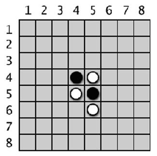
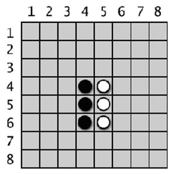
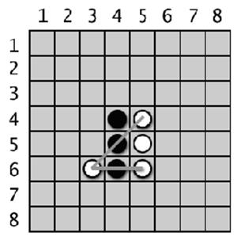
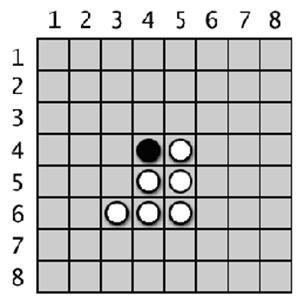
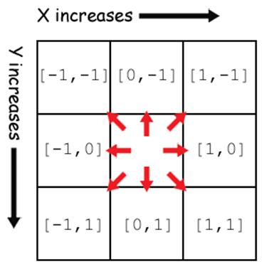

|
|
Chapter 15 |
Reversi |

Topics Covered In This Chapter:
· The bool() Function
· How to Play Reversi
In this chapter, we’ll make a game called Reversi (also called Othello). Reversi is a board game that is played on a grid, so we’ll use a Cartesian coordinate system with XY coordinates. It is a game played with two players. Our version of the game will have a computer AI that is more advanced than the AI we made for Tic Tac Toe. In fact, this AI is so good that it will probably beat you almost every time you play. (I know I lose whenever I play against it!)
Reversi has an 8 × 8 board and tiles that are black on one side and white on the other (our game will use O’s and X’s instead). The starting board looks like Figure 15-1. The black player and white player take turns placing down a new tile of their color. Any of the opponent’s tiles that are between the new tile and the other tiles of that color are flipped. The goal of the game is to have as many of the tiles with your color as possible. For example, Figure 15-2 is what it looks like if the white player places a new white tile on space 5, 6.
|
|
 |
|
Figure 15-1: The starting Reversi board has two white tiles and two black tiles. |
Figure 15-2: White places a new tile. |

The black tile at 5, 5 is between the new white tile and the existing white tile at 5, 4. That black tile is flipped over and becomes a new white tile, making the board look like Figure 15-3. Black makes a similar move next, placing a black tile on 4, 6 which flips the white tile at 4, 5. This results in a board that looks like Figure 15-4.
|
|
 |
|
Figure 15-3: White’s move will flip over one of black’s tiles. |
Figure 15-4: Black places a new tile, which flips over one of white’s tiles. |

Tiles in all directions are flipped as long as they are between the player’s new tile and existing tile. In Figure 15-5, the white player places a tile at 3, 6 and flips black tiles in both directions (marked by the lines.) The result is in Figure 15-6.
|
 |
 |
|
Figure 15-5: White’s second move at 3, 6 will flip two of black’s tiles. |
Figure 15-6: The board after white’s second move. |
Each player can quickly flip many tiles on the board in one or two moves. Players must always make a move that captures at least one tile. The game ends when a player either cannot make a move, or the board is completely full. The player with the most tiles of their color wins.
The AI we make for this game will simply look for any corner moves they can take. If there are no corner moves available, then the computer will select the move that claims the most tiles.
Sample Run of Reversi
Welcome to Reversi!
Do you want to be X or O?
x
The player will go first.
1 2 3 4 5 6 7 8
+---+---+---+---+---+---+---+---+
| | | | | | | | |
1 | | | | | | | | |
| | | | | | | | |
+---+---+---+---+---+---+---+---+
| | | | | | | | |
2 | | | | | | | | |
| | | | | | | | |
+---+---+---+---+---+---+---+---+
| | | | | | | | |
3 | | | | | | | | |
| | | | | | | | |
+---+---+---+---+---+---+---+---+
| | | | | | | | |
4 | | | | X | O | | | |
| | | | | | | | |
+---+---+---+---+---+---+---+---+
| | | | | | | | |
5 | | | | O | X | | | |
| | | | | | | | |
+---+---+---+---+---+---+---+---+
| | | | | | | | |
6 | | | | | | | | |
| | | | | | | | |
+---+---+---+---+---+---+---+---+
| | | | | | | | |
7 | | | | | | | | |
| | | | | | | | |
+---+---+---+---+---+---+---+---+
| | | | | | | | |
8 | | | | | | | | |
| | | | | | | | |
+---+---+---+---+---+---+---+---+
You have 2 points. The computer has 2 points.
Enter your move, or type quit to end the game, or hints to turn off/on hints.
53
1 2 3 4 5 6 7 8
+---+---+---+---+---+---+---+---+
| | | | | | | | |
1 | | | | | | | | |
| | | | | | | | |
+---+---+---+---+---+---+---+---+
| | | | | | | | |
2 | | | | | | | | |
| | | | | | | | |
+---+---+---+---+---+---+---+---+
| | | | | | | | |
3 | | | | | X | | | |
| | | | | | | | |
+---+---+---+---+---+---+---+---+
| | | | | | | | |
4 | | | | X | X | | | |
| | | | | | | | |
+---+---+---+---+---+---+---+---+
| | | | | | | | |
5 | | | | O | X | | | |
| | | | | | | | |
+---+---+---+---+---+---+---+---+
| | | | | | | | |
6 | | | | | | | | |
| | | | | | | | |
+---+---+---+---+---+---+---+---+
| | | | | | | | |
7 | | | | | | | | |
| | | | | | | | |
+---+---+---+---+---+---+---+---+
| | | | | | | | |
8 | | | | | | | | |
| | | | | | | | |
+---+---+---+---+---+---+---+---+
You have 4 points. The computer has 1 points.
Press Enter to see the computer's move.
...skipped for brevity...
1 2 3 4 5 6 7 8
+---+---+---+---+---+---+---+---+
| | | | | | | | |
1 | O | O | O | O | O | O | O | O |
| | | | | | | | |
+---+---+---+---+---+---+---+---+
| | | | | | | | |
2 | O | O | O | O | O | O | O | O |
| | | | | | | | |
+---+---+---+---+---+---+---+---+
| | | | | | | | |
3 | O | O | O | O | O | O | O | O |
| | | | | | | | |
+---+---+---+---+---+---+---+---+
| | | | | | | | |
4 | O | O | X | O | O | O | O | O |
| | | | | | | | |
+---+---+---+---+---+---+---+---+
| | | | | | | | |
5 | O | O | O | X | O | X | O | X |
| | | | | | | | |
+---+---+---+---+---+---+---+---+
| | | | | | | | |
6 | O | X | O | X | X | O | O | |
| | | | | | | | |
+---+---+---+---+---+---+---+---+
| | | | | | | | |
7 | O | X | X | O | O | O | O | O |
| | | | | | | | |
+---+---+---+---+---+---+---+---+
| | | | | | | | |
8 | O | X | X | O | | | X | |
| | | | | | | | |
+---+---+---+---+---+---+---+---+
You have 12 points. The computer has 48 points.
Enter your move, or type quit to end the game, or hints to turn off/on hints.
86
X scored 15 points. O scored 46 points.
You lost. The computer beat you by 31 points.
Do you want to play again? (yes or no)
no
As you can see, the AI was pretty good at beating me 46 to 15. To help the player out, we’ll program the game to provide hints. If the player types 'hints' as their move, they can toggle the hints mode on and off. When hints mode is on, all the possible moves the player can make will show up on the board as '.' characters, like this:
1 2 3 4 5 6 7 8
+---+---+---+---+---+---+---+---+
| | | | | | | | |
1 | | | | | | | | |
| | | | | | | | |
+---+---+---+---+---+---+---+---+
| | | | | | | | |
2 | | | | . | | . | | |
| | | | | | | | |
+---+---+---+---+---+---+---+---+
| | | | | | | | |
3 | | | | O | O | O | | |
| | | | | | | | |
+---+---+---+---+---+---+---+---+
| | | | | | | | |
4 | | | . | O | O | X | | |
| | | | | | | | |
+---+---+---+---+---+---+---+---+
| | | | | | | | |
5 | | | . | O | O | O | X | |
| | | | | | | | |
+---+---+---+---+---+---+---+---+
| | | | | | | | |
6 | | | | . | | . | | |
| | | | | | | | |
+---+---+---+---+---+---+---+---+
| | | | | | | | |
7 | | | | | | | | |
| | | | | | | | |
+---+---+---+---+---+---+---+---+
| | | | | | | | |
8 | | | | | | | | |
| | | | | | | | |
+---+---+---+---+---+---+---+---+
Source Code of Reversi
Reversi is a mammoth program compared to our previous games. It’s over 300 lines long! But don’t worry, many of these lines are comments or blank lines to space out the code and make it more readable.
As with our other programs, we’ll first create several functions to carry out Reversi-related tasks that the main section will call. Roughly the first 250 lines of code are for these helper functions, and the last 50 lines of code implement the Reversi game itself.
If you get errors after typing this code in, compare the code you typed to the book’s code with the online diff tool at http://invpy.com/diff/reversi.
reversi.py
1. # Reversi
2.
3. import random
4. import sys
5.
6. def drawBoard(board):
7. # This function prints out the board that it was passed. Returns None.
8. HLINE = ' +---+---+---+---+---+---+---+---+'
9. VLINE = ' | | | | | | | | |'
10.
11. print(' 1 2 3 4 5 6 7 8')
12. print(HLINE)
13. for y in range(8):
14. print(VLINE)
15. print(y+1, end=' ')
16. for x in range(8):
17. print('| %s' % (board[x][y]), end=' ')
18. print('|')
19. print(VLINE)
20. print(HLINE)
21.
22.
23. def resetBoard(board):
24. # Blanks out the board it is passed, except for the original starting position.
25. for x in range(8):
26. for y in range(8):
27. board[x][y] = ' '
28.
29. # Starting pieces:
30. board[3][3] = 'X'
31. board[3][4] = 'O'
32. board[4][3] = 'O'
33. board[4][4] = 'X'
34.
35.
36. def getNewBoard():
37. # Creates a brand new, blank board data structure.
38. board = []
39. for i in range(8):
40. board.append([' '] * 8)
41.
42. return board
43.
44.
45. def isValidMove(board, tile, xstart, ystart):
46. # Returns False if the player's move on space xstart, ystart is invalid.
47. # If it is a valid move, returns a list of spaces that would become the player's if they made a move here.
48. if board[xstart][ystart] != ' ' or not isOnBoard(xstart, ystart):
49. return False
50.
51. board[xstart][ystart] = tile # temporarily set the tile on the board.
52.
53. if tile == 'X':
54. otherTile = 'O'
55. else:
56. otherTile = 'X'
57.
58. tilesToFlip = []
59. for xdirection, ydirection in [[0, 1], [1, 1], [1, 0], [1, -1], [0, -1], [-1, -1], [-1, 0], [-1, 1]]:
60. x, y = xstart, ystart
61. x += xdirection # first step in the direction
62. y += ydirection # first step in the direction
63. if isOnBoard(x, y) and board[x][y] == otherTile:
64. # There is a piece belonging to the other player next to our piece.
65. x += xdirection
66. y += ydirection
67. if not isOnBoard(x, y):
68. continue
69. while board[x][y] == otherTile:
70. x += xdirection
71. y += ydirection
72. if not isOnBoard(x, y): # break out of while loop, then continue in for loop
73. break
74. if not isOnBoard(x, y):
75. continue
76. if board[x][y] == tile:
77. # There are pieces to flip over. Go in the reverse direction until we reach the original space, noting all the tiles along the way.
78. while True:
79. x -= xdirection
80. y -= ydirection
81. if x == xstart and y == ystart:
82. break
83. tilesToFlip.append([x, y])
84.
85. board[xstart][ystart] = ' ' # restore the empty space
86. if len(tilesToFlip) == 0: # If no tiles were flipped, this is not a valid move.
87. return False
88. return tilesToFlip
89.
90.
91. def isOnBoard(x, y):
92. # Returns True if the coordinates are located on the board.
93. return x >= 0 and x <= 7 and y >= 0 and y <=7
94.
95.
96. def getBoardWithValidMoves(board, tile):
97. # Returns a new board with . marking the valid moves the given player can make.
98. dupeBoard = getBoardCopy(board)
99.
100. for x, y in getValidMoves(dupeBoard, tile):
101. dupeBoard[x][y] = '.'
102. return dupeBoard
103.
104.
105. def getValidMoves(board, tile):
106. # Returns a list of [x,y] lists of valid moves for the given player on the given board.
107. validMoves = []
108.
109. for x in range(8):
110. for y in range(8):
111. if isValidMove(board, tile, x, y) != False:
112. validMoves.append([x, y])
113. return validMoves
114.
115.
116. def getScoreOfBoard(board):
117. # Determine the score by counting the tiles. Returns a dictionary with keys 'X' and 'O'.
118. xscore = 0
119. oscore = 0
120. for x in range(8):
121. for y in range(8):
122. if board[x][y] == 'X':
123. xscore += 1
124. if board[x][y] == 'O':
125. oscore += 1
126. return {'X':xscore, 'O':oscore}
127.
128.
129. def enterPlayerTile():
130. # Lets the player type which tile they want to be.
131. # Returns a list with the player's tile as the first item, and the computer's tile as the second.
132. tile = ''
133. while not (tile == 'X' or tile == 'O'):
134. print('Do you want to be X or O?')
135. tile = input().upper()
136.
137. # the first element in the list is the player's tile, the second is the computer's tile.
138. if tile == 'X':
139. return ['X', 'O']
140. else:
141. return ['O', 'X']
142.
143.
144. def whoGoesFirst():
145. # Randomly choose the player who goes first.
146. if random.randint(0, 1) == 0:
147. return 'computer'
148. else:
149. return 'player'
150.
151.
152. def playAgain():
153. # This function returns True if the player wants to play again, otherwise it returns False.
154. print('Do you want to play again? (yes or no)')
155. return input().lower().startswith('y')
156.
157.
158. def makeMove(board, tile, xstart, ystart):
159. # Place the tile on the board at xstart, ystart, and flip any of the opponent's pieces.
160. # Returns False if this is an invalid move, True if it is valid.
161. tilesToFlip = isValidMove(board, tile, xstart, ystart)
162.
163. if tilesToFlip == False:
164. return False
165.
166. board[xstart][ystart] = tile
167. for x, y in tilesToFlip:
168. board[x][y] = tile
169. return True
170.
171.
172. def getBoardCopy(board):
173. # Make a duplicate of the board list and return the duplicate.
174. dupeBoard = getNewBoard()
175.
176. for x in range(8):
177. for y in range(8):
178. dupeBoard[x][y] = board[x][y]
179.
180. return dupeBoard
181.
182.
183. def isOnCorner(x, y):
184. # Returns True if the position is in one of the four corners.
185. return (x == 0 and y == 0) or (x == 7 and y == 0) or (x == 0 and y == 7) or (x == 7 and y == 7)
186.
187.
188. def getPlayerMove(board, playerTile):
189. # Let the player type in their move.
190. # Returns the move as [x, y] (or returns the strings 'hints' or 'quit')
191. DIGITS1TO8 = '1 2 3 4 5 6 7 8'.split()
192. while True:
193. print('Enter your move, or type quit to end the game, or hints to turn off/on hints.')
194. move = input().lower()
195. if move == 'quit':
196. return 'quit'
197. if move == 'hints':
198. return 'hints'
199.
200. if len(move) == 2 and move[0] in DIGITS1TO8 and move[1] in DIGITS1TO8:
201. x = int(move[0]) - 1
202. y = int(move[1]) - 1
203. if isValidMove(board, playerTile, x, y) == False:
204. continue
205. else:
206. break
207. else:
208. print('That is not a valid move. Type the x digit (1-8), then the y digit (1-8).')
209. print('For example, 81 will be the top-right corner.')
210.
211. return [x, y]
212.
213.
214. def getComputerMove(board, computerTile):
215. # Given a board and the computer's tile, determine where to
216. # move and return that move as a [x, y] list.
217. possibleMoves = getValidMoves(board, computerTile)
218.
219. # randomize the order of the possible moves
220. random.shuffle(possibleMoves)
221.
222. # always go for a corner if available.
223. for x, y in possibleMoves:
224. if isOnCorner(x, y):
225. return [x, y]
226.
227. # Go through all the possible moves and remember the best scoring move
228. bestScore = -1
229. for x, y in possibleMoves:
230. dupeBoard = getBoardCopy(board)
231. makeMove(dupeBoard, computerTile, x, y)
232. score = getScoreOfBoard(dupeBoard)[computerTile]
233. if score > bestScore:
234. bestMove = [x, y]
235. bestScore = score
236. return bestMove
237.
238.
239. def showPoints(playerTile, computerTile):
240. # Prints out the current score.
241. scores = getScoreOfBoard(mainBoard)
242. print('You have %s points. The computer has %s points.' % (scores[playerTile], scores[computerTile]))
243.
244.
245.
246. print('Welcome to Reversi!')
247.
248. while True:
249. # Reset the board and game.
250. mainBoard = getNewBoard()
251. resetBoard(mainBoard)
252. playerTile, computerTile = enterPlayerTile()
253. showHints = False
254. turn = whoGoesFirst()
255. print('The ' + turn + ' will go first.')
256.
257. while True:
258. if turn == 'player':
259. # Player's turn.
260. if showHints:
261. validMovesBoard = getBoardWithValidMoves(mainBoard, playerTile)
262. drawBoard(validMovesBoard)
263. else:
264. drawBoard(mainBoard)
265. showPoints(playerTile, computerTile)
266. move = getPlayerMove(mainBoard, playerTile)
267. if move == 'quit':
268. print('Thanks for playing!')
269. sys.exit() # terminate the program
270. elif move == 'hints':
271. showHints = not showHints
272. continue
273. else:
274. makeMove(mainBoard, playerTile, move[0], move[1])
275.
276. if getValidMoves(mainBoard, computerTile) == []:
277. break
278. else:
279. turn = 'computer'
280.
281. else:
282. # Computer's turn.
283. drawBoard(mainBoard)
284. showPoints(playerTile, computerTile)
285. input('Press Enter to see the computer\'s move.')
286. x, y = getComputerMove(mainBoard, computerTile)
287. makeMove(mainBoard, computerTile, x, y)
288.
289. if getValidMoves(mainBoard, playerTile) == []:
290. break
291. else:
292. turn = 'player'
293.
294. # Display the final score.
295. drawBoard(mainBoard)
296. scores = getScoreOfBoard(mainBoard)
297. print('X scored %s points. O scored %s points.' % (scores['X'], scores['O']))
298. if scores[playerTile] > scores[computerTile]:
299. print('You beat the computer by %s points! Congratulations!' % (scores[playerTile] - scores[computerTile]))
300. elif scores[playerTile] < scores[computerTile]:
301. print('You lost. The computer beat you by %s points.' % (scores[computerTile] - scores[playerTile]))
302. else:
303. print('The game was a tie!')
304.
305. if not playAgain():
306. break
How the Code Works
The Game Board Data Structure
Before getting into the code, let’s figure out the board’s data structure. This data structure is a list of lists, just like the one in the previous Sonar game. The list of lists is created so that board[x][y] will represent the character on space located at position x on the X-axis (going left/right) and position y on the Y-axis (going up/down).
This character can either be a ' ' space character (to represent a blank space), a '.' period character (to represent a possible move in hint mode), or an 'X' or 'O' (to represent a player’s tile). Whenever you see a parameter named board, it is meant to be this kind of list of lists data structure.
Importing Other Modules
1. # Reversi
2. import random
3. import sys
Line 2 imports the random module for its randint() and choice() functions. Line 3 imports the sys module for its exit() function.
Drawing the Board Data Structure on the Screen
6. def drawBoard(board):
7. # This function prints out the board that it was passed. Returns None.
8. HLINE = ' +---+---+---+---+---+---+---+---+'
9. VLINE = ' | | | | | | | | |'
10.
11. print(' 1 2 3 4 5 6 7 8')
12. print(HLINE)
The drawBoard() function will print the current game board based on the data structure in board. Notice that each square of the board looks like this (there could also be a 'O', '.', or ' ' string instead of the 'X'):
+---+
| |
| X |
| |
+---+
Since the horizontal line is printed over and over again, line 8 stores it in a constant variable named HLINE. This will save you from typing out the string repeatedly.
There are also lines above and below the center of tile that are nothing but '|' characters (called “pipe” characters) with three spaces between. This is stored in a constant named VLINE.
Line 11 is the first print() function call executed, and it prints the labels for the X-axis along the top of the board. Line 12 prints the top horizontal line of the board.
13. for y in range(8):
14. print(VLINE)
15. print(y+1, end=' ')
16. for x in range(8):
17. print('| %s' % (board[x][y]), end=' ')
18. print('|')
19. print(VLINE)
20. print(HLINE)
The for loop will loop eight times, once for each row. Line 15 prints the label for the Y-axis on the left side of the board, and has an end=' ' keyword argument to print a single space instead of a new line. This is so that another loop (which again loops eight times, once for each space) prints each space (along with the 'X', 'O', or ' ' character depending on what is stored in board[x][y].)
The print() function call inside the inner loop also has an end=' ' keyword argument at the end of it, meaning a space character is printed instead of a newline character. That will produce a single line on the screen that looks like '| X | X | X | X | X | X | X | X ' (if each of the board[x][y] values were 'X').
After the inner loop is done, the print() function call on line 18 prints the final '|' character along with a newline.
The code inside the outer for loop from line 14 to line 20 prints an entire row of the board like this:
| | | | | | | | |
| X | X | X | X | X | X | X | X |
| | | | | | | | |
+---+---+---+---+---+---+---+---+
When the for loop on line 13 prints the row eight times, it forms the entire board (of course, some of the spaces on the board will have 'O' or ' ' instead of 'X'):
| | | | | | | | |
| X | X | X | X | X | X | X | X |
| | | | | | | | |
+---+---+---+---+---+---+---+---+
| | | | | | | | |
| X | X | X | X | X | X | X | X |
| | | | | | | | |
+---+---+---+---+---+---+---+---+
| | | | | | | | |
| X | X | X | X | X | X | X | X |
| | | | | | | | |
+---+---+---+---+---+---+---+---+
| | | | | | | | |
| X | X | X | X | X | X | X | X |
| | | | | | | | |
+---+---+---+---+---+---+---+---+
| | | | | | | | |
| X | X | X | X | X | X | X | X |
| | | | | | | | |
+---+---+---+---+---+---+---+---+
| | | | | | | | |
| X | X | X | X | X | X | X | X |
| | | | | | | | |
+---+---+---+---+---+---+---+---+
| | | | | | | | |
| X | X | X | X | X | X | X | X |
| | | | | | | | |
+---+---+---+---+---+---+---+---+
| | | | | | | | |
| X | X | X | X | X | X | X | X |
| | | | | | | | |
+---+---+---+---+---+---+---+---+
Resetting the Game Board
23. def resetBoard(board):
24. # Blanks out the board it is passed, except for the original starting position.
25. for x in range(8):
26. for y in range(8):
27. board[x][y] = ' '
Line 25 and 26 have nested loops to set the board data structure to be all single-space strings. This makes a blank Reversi board. The resetBoard() function is called as part of starting a new game.
Setting Up the Starting Pieces
29. # Starting pieces:
30. board[3][3] = 'X'
31. board[3][4] = 'O'
32. board[4][3] = 'O'
33. board[4][4] = 'X'
At the beginning of a game, each player has two tiles already laid down in the center. Lines 30 to 33 set those tiles on the blank board.
The resetBoard() function does not have to return the board variable, because board is a reference to a list. Making changes inside the function’s local scope will modify the original list that was passed as the argument. (See the References section in Chapter 10.)
Creating a New Game Board Data Structure
36. def getNewBoard():
37. # Creates a brand new, blank board data structure.
38. board = []
39. for i in range(8):
40. board.append([' '] * 8)
41.
42. return board
The getNewBoard() function creates a new board data structure and returns it. Line 38 creates the outer list and stores a reference to this list in board. Line 40 creates the inner lists using list replication. ([' '] * 8 evaluates to be the same as [' ', ' ', ' ', ' ', ' ', ' ', ' ', ' '] but with less typing.)
Line 39’s for loop here creates the eight inner lists. The spaces represent a completely empty game board.
What board ends up being is a list of eight lists, and each of those eight lists themselves has eight strings. The result is 64 ' ' strings.
Checking if a Move is Valid
45. def isValidMove(board, tile, xstart, ystart):
46. # Returns False if the player's move on space xstart, ystart is invalid.
47. # If it is a valid move, returns a list of spaces that would become the player's if they made a move here.
48. if board[xstart][ystart] != ' ' or not isOnBoard(xstart, ystart):
49. return False
50. board[xstart][ystart] = tile # temporarily set the tile on the board.
51. if tile == 'X':
52. otherTile = 'O'
53. else:
54. otherTile = 'X'
55. tilesToFlip = []
Given a board data structure, the player’s tile, and the XY coordinates for player’s move, isValidMove() should return True if the Reversi game rules allow a move to those coordinates and False if they don’t.
Line 48 checks if the XY coordinates are not on the game board, or if the space isn’t empty. isOnBoard() is a function defined later in the program that makes sure both the X and Y coordinates are between 0 and 7.
The next step is to temporarily place the player’s tile on the board. This tile will be removed (by setting the board space back to ' ' before returning).
The player’s tile (either the human player or the computer player) is in tile, but this function will need to know the other player’s tile. If the player’s tile is 'X' then obviously the other player’s tile is 'O', and vice versa.
Finally, if the given XY coordinate ends up as a valid position, isValidMove() returns a list of all the opponent's tiles that would be flipped by this move.
59. for xdirection, ydirection in [[0, 1], [1, 1], [1, 0], [1, -1], [0, -1], [-1, -1], [-1, 0], [-1, 1]]:
The for loop iterates through a list of lists which represent directions you can move on the game board. The game board is a Cartesian coordinate system with an X and Y direction. There are eight directions you can move: up, down, left, right, and the four diagonal directions. Each of the eight 2-item lists in the list on line 59 is used for moving in one of these directions. The program moves in a direction by adding the first value in the two-item list to the X coordinate, and the second value to the Y coordinate.
Because the X coordinates increase as you go to the right, you can “move” to the right by adding 1 to the X coordinate. So the [1, 0] list adds 1 to the X coordinate and 0 to the Y coordinate, resulting in “movement” to the right. Moving to the left is the opposite: you would subtract 1 (that is, add -1) from the X coordinate.
But to move diagonally, you need to add or subtract to both coordinates. For example, adding 1 to the X coordinate to move right and adding -1 to the Y coordinate to move up would result in moving to the up-right diagonal direction.
Checking Each of the Eight Directions
Here is a diagram to make it easier to remember which two-item list represents which direction:

Figure 15-7: Each two-item list represents one of the eight directions.
59. for xdirection, ydirection in [[0, 1], [1, 1], [1, 0], [1, -1], [0, -1], [-1, -1], [-1, 0], [-1, 1]]:
60. x, y = xstart, ystart
61. x += xdirection # first step in the direction
62. y += ydirection # first step in the direction
Line 60 sets an x and y variable to be the same value as xstart and ystart, respectively, using multiple assignment. Change x and y to “move” in the direction that xdirection and ydirection dictate. The xstart and ystart variables will stay the same so that the program can remember which space it originally started from.
63. if isOnBoard(x, y) and board[x][y] == otherTile:
64. # There is a piece belonging to the other player next to our piece.
65. x += xdirection
66. y += ydirection
67. if not isOnBoard(x, y):
68. continue
Remember, in order for this to be a valid move, the first step in this direction must be 1) on the board and 2) must be occupied by the other player’s tile. Otherwise there aren’t any of the opponent’s tiles to flip, and a valid move must flip over at least one tile. If these two things aren’t true, line 63’s condition isn’t True and the execution goes back to the for statement for the next direction.
But if the first space does have the other player’s tile, then the program should keep checking in that direction until it reaches one of the player’s tiles. If it reaches past the end of the board though, then line 68 should continue back to the for statement to try the next direction.
69. while board[x][y] == otherTile:
70. x += xdirection
71. y += ydirection
72. if not isOnBoard(x, y): # break out of while loop, then continue in for loop
73. break
74. if not isOnBoard(x, y):
75. continue
The while loop on line 69 keeps looping so that x and y keep going in the current direction as long as it keeps seeing a trail of the other player’s tiles. If line 72 detects that x and y moved off of the board, line 73 breaks out of the for loop and the flow of execution moves to line 74.
What you really want to do is break out of the while loop but continue in the for loop. This is why line 74 rechecks not isOnBoard(x, y) and runs continue, which moves execution to the next direction in line 59’s for statement. Remember, break and continue statements will only break or continue from the innermost loop they are in.
Finding Out if There are Pieces to Flip Over
76. if board[x][y] == tile:
77. # There are pieces to flip over. Go in the reverse direction until we reach the original space, noting all the tiles along the way.
78. while True:
79. x -= xdirection
80. y -= ydirection
81. if x == xstart and y == ystart:
82. break
83. tilesToFlip.append([x, y])
Line 69’s while loop stops looping when the code has reached the end of the otherTile tiles. Line 76 checks if this space on the board holds one of our tiles. If it does, then the move originally passed to isValidMove() is valid.
Line 78 loops by moving x and y in reverse back to the original xstart and ystart position by subtracting x and y. Each space is appended to the tilesToFlip list.
85. board[xstart][ystart] = ' ' # restore the empty space
86. if len(tilesToFlip) == 0: # If no tiles were flipped, this is not a valid move.
87. return False
88. return tilesToFlip
The for loop that started on line 59 does this in all eight directions. After that loop is done, the tilesToFlip list will contain the XY coordinates all of our opponent’s tiles that would be flipped if the player moved on xstart, ystart. Remember, the isValidMove() function is only checking to see if the original move was valid. It doesn’t actually permanently change the data structure of the game board.
If none of the eight directions ended up flipping at least one of the opponent’s tiles, then tilesToFlip will be an empty list. This is a sign that this move is not valid and isValidMove() should return False.
Otherwise, isValidMove() returns tilesToFlip.
Checking for Valid Coordinates
91. def isOnBoard(x, y):
92. # Returns True if the coordinates are located on the board.
93. return x >= 0 and x <= 7 and y >= 0 and y <=7
isOnBoard() is a function called from isValidMove(). Calling the function is shorthand for the Boolean expression on line 93 that is True if both x and y are between 0 and 7. This function checks if an X and Y coordinate is actually on the game board. For example, an X coordinate of 4 and a Y coordinate of 9999 would not be on the board since Y coordinates only go up to 7.
Getting a List with All Valid Moves
96. def getBoardWithValidMoves(board, tile):
97. # Returns a new board with . marking the valid moves the given player can make.
98. dupeBoard = getBoardCopy(board)
99.
100. for x, y in getValidMoves(dupeBoard, tile):
101. dupeBoard[x][y] = '.'
102. return dupeBoard
getBoardWithValidMoves() returns a game board data structure that has '.' characters for all spaces that are valid moves. The periods are for the hints mode that displays a board with all possible moves marked on it.
This function creates a duplicate game board data structure (returned by getBoardCopy() on line 98) instead of modifying the one passed to it in the board parameter. Line 100 calls getValidMoves() to get a list of XY coordinates with all the legal moves the player could make. The board copy is marked with periods in those spaces and returned.
105. def getValidMoves(board, tile):
106. # Returns a list of [x,y] lists of valid moves for the given player on the given board.
107. validMoves = []
108.
109. for x in range(8):
110. for y in range(8):
111. if isValidMove(board, tile, x, y) != False:
112. validMoves.append([x, y])
113. return validMoves
The getValidMoves() function returns a list of two-item lists. These lists hold the XY coordinates for all valid moves for tile’s player for the board data structure in the board parameter.
This function uses nested loops (on lines 109 and 110) to check every XY coordinate (all sixty four of them) by calling isValidMove() on that space and checking if it returns False or a list of possible moves (in which case it is a valid move). Each valid XY coordinate is appended to the list in validMoves.
The bool() Function
The bool() is similar to the int() and str() functions. It returns the Boolean value form of the value passed to it.
Most data types have one value that is considered the False value for that data type. Every other value is consider True. For example, the integer 0, the floating point number 0.0, the empty string, the empty list, and the empty dictionary are all considered to be False when used as the condition for an if or loop statement. All other values are True. Try entering the following into the interactive shell:
>>> bool(0)
False
>>> bool(0.0)
False
>>> bool('')
False
>>> bool([])
False
>>> bool({})
False
>>> bool(1)
True
>>> bool('Hello')
True
>>> bool([1, 2, 3, 4, 5])
True
>>> bool({'spam':'cheese', 'fizz':'buzz'})
True
Imagine that any statement’s condition is placed inside a call to
bool().
That is, conditions are automatically interpreted as Boolean values. This is
why the condition on line 111 works correctly. The call to the isValidMove()
function either returns the Boolean value False or a non-empty
list.
If you imagine that the entire condition is placed inside a call to bool(),
then line 111’s condition False becomes bool(False) (which, of
course, evaluates to False). And a condition of a non-empty list
placed as the parameter to bool() will return True.
Getting the Score of the Game Board
116. def getScoreOfBoard(board):
117. # Determine the score by counting the tiles. Returns a dictionary with keys 'X' and 'O'.
118. xscore = 0
119. oscore = 0
120. for x in range(8):
121. for y in range(8):
122. if board[x][y] == 'X':
123. xscore += 1
124. if board[x][y] == 'O':
125. oscore += 1
126. return {'X':xscore, 'O':oscore}
The getScoreOfBoard() function uses nested for loops to check all 64 spaces on the board (8 rows times 8 columns per row is 64 spaces) and see which tile (if any) is on them. For each 'X' tile, the code increments xscore on line 123. For each 'O' tile, the code increments oscore on line 125
Getting the Player’s Tile Choice
129. def enterPlayerTile():
130. # Lets the player type which tile they want to be.
131. # Returns a list with the player's tile as the first item, and the computer's tile as the second.
132. tile = ''
133. while not (tile == 'X' or tile == 'O'):
134. print('Do you want to be X or O?')
135. tile = input().upper()
This function asks the player which tile they want to be, either 'X' or 'O'. The for loop will keep looping until the player types in 'X' or 'O'.
137. # the first element in the list is the player's tile, the second is the computer's tile.
138. if tile == 'X':
139. return ['X', 'O']
140. else:
141. return ['O', 'X']
The enterPlayerTile() function then returns a two-item list, where the player’s tile choice is the first item and the computer’s tile is the second. Line 252, which calls enterPlayerTile(), uses multiple assignment to put these two returned items in two variables.
Determining Who Goes First
144. def whoGoesFirst():
145. # Randomly choose the player who goes first.
146. if random.randint(0, 1) == 0:
147. return 'computer'
148. else:
149. return 'player'
The whoGoesFirst() function randomly selects who goes first, and returns either the string 'computer' or the string 'player'.
Asking the Player to Play Again
152. def playAgain():
153. # This function returns True if the player wants to play again, otherwise it returns False.
154. print('Do you want to play again? (yes or no)')
155. return input().lower().startswith('y')
The playAgain() function was also in previous games. If the player types in a string that begins with 'y', then the function returns True. Otherwise the function returns False.
Placing Down a Tile on the Game Board
158. def makeMove(board, tile, xstart, ystart):
159. # Place the tile on the board at xstart, ystart, and flip any of the opponent's pieces.
160. # Returns False if this is an invalid move, True if it is valid.
161. tilesToFlip = isValidMove(board, tile, xstart, ystart)
makeMove() is called when you want to place a tile on the board and flip the other tiles according to the rules of Reversi. This function modifies the board data structure that is passed in-place. Changes made to the board variable (because it is a list reference) will be made to the global scope.
Most of the work is done by isValidMove(), which returns a list of XY coordinates (in a two-item list) of tiles that need to be flipped. (Remember, if the xstart and ystart arguments point to an invalid move, then isValidMove() will return the Boolean value False.)
163. if tilesToFlip == False:
164. return False
165.
166. board[xstart][ystart] = tile
167. for x, y in tilesToFlip:
168. board[x][y] = tile
169. return True
On lines 163 and 164, if the return value of isValidMove() (now stored in tilesToFlip) was False, then makeMove() will also return False.
Otherwise, isValidMove() returns a list of spaces on the board to put down the tiles (the 'X' or 'O' string in tile). Line 166 sets the space that the player has moved on. Line 167’s for loop sets all the tiles that are in tilesToFlip.
Copying the Board Data Structure
172. def getBoardCopy(board):
173. # Make a duplicate of the board list and return the duplicate.
174. dupeBoard = getNewBoard()
175.
176. for x in range(8):
177. for y in range(8):
178. dupeBoard[x][y] = board[x][y]
179.
180. return dupeBoard
getBoardCopy() is different from getNewBoard(). getNewBoad() will create a blank game board data structure which has only empty spaces and the four starting tiles. getBoardCopy() will create a blank game board data structure, but then copy all of the spaces from the board parameter. This function is used by the AI to have a game board that it can change around without changing the real game board. This technique was also used by the previous Tic Tac Toe program.
A call to getNewBoard() handles getting a fresh game board data structure. Then the two nested for loops copy each of the 64 tiles from board to the duplicate board data structure in dupeBoard.
Determining if a Space is on a Corner
183. def isOnCorner(x, y):
184. # Returns True if the position is in one of the four corners.
185. return (x == 0 and y == 0) or (x == 7 and y == 0) or (x == 0 and y == 7) or (x == 7 and y == 7)
The isOnCorner() function returns True if the coordinates are on a corner space at coordinates (0,0), (7,0), (0,7) or (7,7). Otherwise isOnCorner() returns False.
Getting the Player’s Move
188. def getPlayerMove(board, playerTile):
189. # Let the player type in their move.
190. # Returns the move as [x, y] (or returns the strings 'hints' or 'quit')
191. DIGITS1TO8 = '1 2 3 4 5 6 7 8'.split()
The getPlayerMove() function is called to let the player type in the coordinates of their next move (and check if the move is valid). The player can also type in 'hints' to turn hints mode on (if it is off) or off (if it is on). The player can also type in 'quit' to quit the game.
The DIGITS1TO8 constant variable is the list ['1', '2', '3', '4', '5', '6', '7', '8']. The DIGITS1TO8 constant is used because it is easier to type than the entire list. You can’t use the isdigit() method because that would allow 0 and 9 to be entered, which are not valid coordinates on the 8 × 8 board.
192. while True:
193. print('Enter your move, or type quit to end the game, or hints to turn off/on hints.')
194. move = input().lower()
195. if move == 'quit':
196. return 'quit'
197. if move == 'hints':
198. return 'hints'
The while loop will keep looping until the player has typed in a valid move. Lines 195 to 198 check if the player wants to quit or toggle hints mode, and return the string 'quit' or 'hints', respectively. The lower() method is called on the string returned by input() so the player can type 'HINTS' or 'Quit' but still have the command understood.
The code that called getPlayerMove() will handle what to do if the player wants to quit or toggle hints mode.
200. if len(move) == 2 and move[0] in DIGITS1TO8 and move[1] in DIGITS1TO8:
201. x = int(move[0]) - 1
202. y = int(move[1]) - 1
203. if isValidMove(board, playerTile, x, y) == False:
204. continue
205. else:
206. break
The game is expecting that the player would have typed in the XY coordinates of their move as two numbers without anything between them. Line 200 first checks that the size of the string the player typed in is 2. After that, it also checks that both move[0] (the first character in the string) and move[1] (the second character in the string) are strings that exist in DIGITS1TO8.
Remember that the game board data structures have indexes from 0 to 7, not 1 to 8. The code prints 1 to 8 when the board is displayed in drawBoard() because non-programmers are used to numbers beginning at 1 instead of 0. So to convert the strings in move[0] and move[1] to integers, lines 201 and 202 subtract 1.
Even if the player typed in a correct move, the code still needs to check that the move is allowed by the rules of Reversi. This is done by isValidMove() which is passed the game board data structure, the player’s tile, and the XY coordinates of the move.
If isValidMove() returns False, then line 204’s continue statement executes. The execution will then go back to the beginning of the while loop and asks the player for a valid move again.
Otherwise, the player did type in a valid move and the execution needs to break out of the while loop.
207. else:
208. print('That is not a valid move. Type the x digit (1-8), then the y digit (1-8).')
209. print('For example, 81 will be the top-right corner.')
If the if statement’s condition on line 200 was False, then the player didn’t type in a valid move. Lines 208 and 209 instructs them on how to correctly type in moves. Afterwards, the execution moves back to the while statement on line 192 because line 209 isn’t only the last line in the else-block, but also the last line in the while-block.
211. return [x, y]
Finally, getPlayerMove() returns a two-item list with the XY coordinates of the player’s valid move.
Getting the Computer’s Move
214. def getComputerMove(board, computerTile):
215. # Given a board and the computer's tile, determine where to
216. # move and return that move as a [x, y] list.
217. possibleMoves = getValidMoves(board, computerTile)
getComputerMove() and is where the AI algorithm is implemented. Normally you use the results from getValidMoves() for hints mode. Hints mode will print '.' period characters on the board to show the player all the potential moves they can make.
But if getValidMoves() is called with the computer AI’s tile (in computerTile), it will also find all the possible moves that the computer can make. The AI will select the best move from this list.
219. # randomize the order of the possible moves
220. random.shuffle(possibleMoves)
First, random.shuffle() will randomize the order of moves in the possibleMoves list. Why we want to shuffle the possibleMoves list will be explained later, but first let’s look at the algorithm.
Corner Moves are the Best Moves
222. # always go for a corner if available.
223. for x, y in possibleMoves:
224. if isOnCorner(x, y):
225. return [x, y]
First, line 223 loops through every move in possibleMoves. If any of them are on the corner, return that space is returned as the move. Corner moves are a good idea in Reversi because once a tile has been placed on the corner, it can never be flipped over. Since possibleMoves is a list of two-item lists, use multiple assignment in the for loop to set x and y.
If possibleMoves contains multiple corner moves, the first one is always used. But since possibleMoves was shuffled on line 220, it is random which corner move is first in the list.
Get a List of the Best Scoring Moves
227. # Go through all the possible moves and remember the best scoring move
228. bestScore = -1
229. for x, y in possibleMoves:
230. dupeBoard = getBoardCopy(board)
231. makeMove(dupeBoard, computerTile, x, y)
232. score = getScoreOfBoard(dupeBoard)[computerTile]
233. if score > bestScore:
234. bestMove = [x, y]
235. bestScore = score
236. return bestMove
If there are no corner moves, loop through the entire list and find out which move results in the highest score. Line 229’s for loop will set x and y to every move in possibleMoves. bestMove is set to the highest scoring move the code has found so far, and bestScore is set to the best move’s score.
When the code in the loop finds a move that scores higher than bestScore, line 233 to 235 will store that move and score as the new values in bestMove and bestScore.
Simulate All Possible Moves on Duplicate Board Data Structures
Before simulating a move, line 230 makes a duplicate game board data structure by calling getBoardCopy(). You’ll want a copy so you can modify without changing the real game board data structure stored in the board variable.
Then line 231 calls makeMove(), passing the duplicate board (stored in dupeBoard) instead of the real board. This will simulate what would happen on the real board if this move was made. makeMove() will handle placing the computer’s tile and the flipping the player’s tiles on the duplicate board.
Line 232 calls getScoreOfBoard()with the duplicate board, which returns a dictionary where the keys are 'X' and 'O', and the values are the scores.
For example, pretend that getScoreOfBoard() returns the dictionary {'X':22, 'O':8} and computerTile is 'X'. Then getScoreOfBoard(dupeBoard)[computerTile] would evaluate to {'X':22, 'O':8}['X'], which would then evaluate to 22. If 22 is larger than bestScore, bestScore is set to 22 and bestMove is set to the current x and y values.
By the time this for loop is finished, you can be sure that bestScore is the highest possible score a move can make, and that move is stored in bestMove.
Line 228 first sets bestScore to -1 so that the first move the code checks will be set to the first bestMove. This will guarantee that bestMove is set to one of the moves from possibleMoves when it returns.
Even though the code always chooses the first in the list of these tied moves, it’s random because the list order was shuffled on line 220. This ensures that the AI won’t be predictable when there’s more than one best move.
Printing the Scores to the Screen
239. def showPoints(playerTile, computerTile):
240. # Prints out the current score.
241. scores = getScoreOfBoard(mainBoard)
242. print('You have %s points. The computer has %s points.' % (scores[playerTile], scores[computerTile]))
showPoints() calls the getScoreOfBoard() function and then prints the player’s and computer’s scores. Remember that getScoreOfBoard() returns a dictionary with the keys 'X' and 'O' and values of the scores for the X and O players.
That’s all the functions for the Reversi game. The code starting on line 246 will implement the actual game and calls these functions as needed.
The Start of the Game
246. print('Welcome to Reversi!')
247.
248. while True:
249. # Reset the board and game.
250. mainBoard = getNewBoard()
251. resetBoard(mainBoard)
252. playerTile, computerTile = enterPlayerTile()
253. showHints = False
254. turn = whoGoesFirst()
255. print('The ' + turn + ' will go first.')
The while loop on line 248 is the main game loop. The program will loop back to line 248 when a new game starts. First get a new game board data structure by calling getNewBoard() and set the starting tiles by calling resetBoard(). mainBoard is the main game board data structure for the program. The call to enterPlayerTile() will let the player type in whether they want to be 'X' or 'O'. The return value is then stored in playerTile and computerTile using multiple assignment.
showHints is a Boolean value that determines if hints mode is on or off. It starts as off as False on line 253.
The turn variable is a string that either has the string value 'player' or 'computer'. It will keep track of whose turn it is. It is set to the return value of whoGoesFirst(), which randomly chooses who will go first.
Running the Player’s Turn
257. while True:
258. if turn == 'player':
259. # Player's turn.
260. if showHints:
261. validMovesBoard = getBoardWithValidMoves(mainBoard, playerTile)
262. drawBoard(validMovesBoard)
263. else:
264. drawBoard(mainBoard)
265. showPoints(playerTile, computerTile)
The while loop that starts on line 257 will keep looping each time the player or computer takes a turn. The execution will break out of this loop when the current game is over.
Line 258 has an if statement whose body has the code that runs if it is the player’s turn. (The else-block that starts on line 282 has the code for the computer’s turn.)
First the board is displayed on the screen. If hints mode is on (that is, showHints is True), then the board data structure needs to have '.' period characters on every valid space the player could move.
The getBoardWithValidMoves() function does that. It is passed a game board data structure and returns a copy that also contains '.' period characters. Line 262 passes this board to the drawBoard() function.
If hints mode is off, then line 264 passes mainBoard to drawBoard().
After printing out the game board to the player, you also want to print the current score by calling showPoints() on line 265.
266. move = getPlayerMove(mainBoard, playerTile)
Next, let the player type in their move. getPlayerMove() handles this, and its return value is a two-item list of the XY coordinate of the player’s move. getPlayerMove() has already made sure that the move the player typed in is a valid move.
Handling the Quit or Hints Commands
267. if move == 'quit':
268. print('Thanks for playing!')
269. sys.exit() # terminate the program
270. elif move == 'hints':
271. showHints = not showHints
272. continue
273. else:
274. makeMove(mainBoard, playerTile, move[0], move[1])
If the player typed in the string 'quit' for their move, then getPlayerMove() would have returned the string 'quit'. In that case, line 269 calls the sys.exit() to terminate the program.
If the player typed in the string 'hints' for their move, then getPlayerMove() would have returned the string 'hints'. In that case, you want to turn hints mode on (if it was off) or off (if it was on).
The showHints = not showHints assignment statement on line 271 handles both of these cases, because not False evaluates to True and not True evaluates to False. Then the continue statement moves the execution to the start of the loop (turn has not changed, so it will still be the player’s turn).
Otherwise, if the player didn’t quit or toggle hints mode, line 274 calls makeMove() to make the player’s move on the board.
Make the Player’s Move
276. if getValidMoves(mainBoard, computerTile) == []:
277. break
278. else:
279. turn = 'computer'
After making the player’s move, line 276 calls getValidMoves() to see if the computer could make any moves. If getValidMoves() returns a blank list, then there are no more valid moves that the computer could make. In that case, line 277 breaks out of the while loop and ends the game.
Otherwise, line 279 sets turn to 'computer'. The flow of execution skips the else-block and reaches the end of the while-block, so execution jumps back to the while statement on line 257. This time, however, it will be the computer’s turn.
Running the Computer’s Turn
281. else:
282. # Computer’s turn.
283. drawBoard(mainBoard)
284. showPoints(playerTile, computerTile)
285. input('Press Enter to see the computer\'s move.')
286. x, y = getComputerMove(mainBoard, computerTile)
287. makeMove(mainBoard, computerTile, x, y)
After printing out the board with drawBoard(), also print the current score with a call to showPoints() on line 284.
Line 285 calls input() to pause the script while the player can look at the board. This is much like how input() was used to pause the program in the Jokes chapter. Instead of using a print() call to print a string before a call to input(), you can do the same thing by passing the string to print to input().
After the player has looked at the board and pressed enter, line 286 calls getComputerMove() to get the XY coordinates of the computer’s next move. These coordinates are stored in variables x and y using multiple assignment.
Finally, pass x and y, along with the game board data structure and the computer’s tile, to the makeMove() function. This places the computer’s tile on the game board in mainBoard to reflect the computer’s move. Line 286’s call to getComputerMove() got the computer’s move (and stored it in variables x and y). The call to makeMove() on line 287 makes the move on the board.
289. if getValidMoves(mainBoard, playerTile) == []:
290. break
291. else:
292. turn = 'player'
Lines 289 to 292 are similar to lines 276 to 279. After the computer has made its move, line 289 checks if there exist any valid moves the human player can make. If getValidMoves() returns an empty list, then there are no valid moves. That means the game is over, and line 290 breaks out of the while loop.
Otherwise, there’s at least one possible move the player should make. The turn variable is to 'player'. There is no more code in the while-block after line 292, so execution loops back to the while statement on line 257.
Drawing Everything on the Screen
294. # Display the final score.
295. drawBoard(mainBoard)
296. scores = getScoreOfBoard(mainBoard)
297. print('X scored %s points. O scored %s points.' % (scores['X'], scores['O']))
298. if scores[playerTile] > scores[computerTile]:
299. print('You beat the computer by %s points! Congratulations!' % (scores[playerTile] - scores[computerTile]))
300. elif scores[playerTile] < scores[computerTile]:
301. print('You lost. The computer beat you by %s points.' % (scores[computerTile] - scores[playerTile]))
302. else:
303. print('The game was a tie!')
Line 294 is the first line beyond the while-block that started on line 257. This code is executed when the execution breaks out of that while loop from line 290 or 277. At this point, the game is over. Now the program should print the board and scores and determine who won the game.
getScoreOfBoard() will return a dictionary with keys 'X' and 'O' and values of both players’ scores. By checking if the player’s score is greater than, less than, or equal to the computer’s score, you can know if the player won, lost, or tied, respectively.
Ask the Player to Play Again
305. if not playAgain():
306. break
Call the playAgain() function, which returns True if the player typed in that they want to play another game. If playAgain() returns False, the not operator makes the if statement’s condition True, the execution breaks out of the while loop that started on line 248. Since there are no more lines of code after this while-block, the program terminates.
Otherwise, playAgain() has returned True (making the if statement’s condition False), and so execution loops back to the while statement on line 248 and a new game board is created.
Changing the drawBoard() Function
The board you draw for the Reversi game is large. But you could change the drawBoard() function’s code to draw out a much smaller board, while keeping the rest of the game code the same. The new, smaller board would look like this:
12345678
+--------+
1| O |
2| XOX |
3| O |
4| XXXXX |
5| .OX |
6| OOO |
7| ..O.. |
8| O |
+--------+
You have 8 points. The computer has 9 points.
Enter your move, or type quit to end the game, or hints to turn off/on hints.
Here is the code for this new drawBoard() function, starting at line 6. You can also download this code from http://invpy.com/reversi_mini.py.
6. def drawBoard(board):
7. # This function prints out the board that it was passed. Returns None.
8. HLINE = ' +--------+'
9. print(' 12345678')
10. print(HLINE)
11. for y in range(8):
12. print('%s|' % (y+1), end='')
13. for x in range(8):
14. print(board[x][y], end='')
15. print('|')
16. print(HLINE)
Summary
The AI may seem almost unbeatable, but this isn’t because the computer is smart. The strategy it follows is simple: move on the corner if you can, otherwise make the move that will flip over the most tiles. We could do that, but it would be slow to figure out how many tiles would be flipped for every possible valid move we could make. But calculating this for the computer is simple. The computer isn’t smarter than us, it’s just much faster!
This game is similar to Sonar because it makes use of a grid for a board. It is also like the Tic Tac Toe game because there’s an AI that plans out the best move for it to take. This chapter only introduced one new concept: that empty lists, blank strings, and the integer 0 all evaluate to False in the context of a condition.
Other than that, this game used programming concepts you already knew! You don’t have to know much about programming to create interesting games. However, this game is stretching how far you can get with ASCII art. The board took up almost the entire screen to draw, and the game didn't have any color.
Later in this book, we will learn how to create games with graphics and animation, not just text. We will do this using a module called Pygame, which adds new functions and features to Python so that we can break away from using only text and keyboard input.